Ikut berpartisipasi dalam pemilihan ketua dan wakil ketua OSSIP periode 2027-2028. Pilih pemimpin yang mampu membawa perubahan positif untuk sekolah kita.
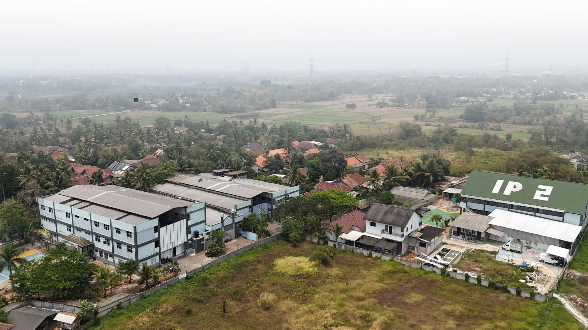
Kenali para calon pemimpin yang akan membawa perubahan positif untuk sekolah kita. Pilih yang terbaik untuk masa depan OSSIP.
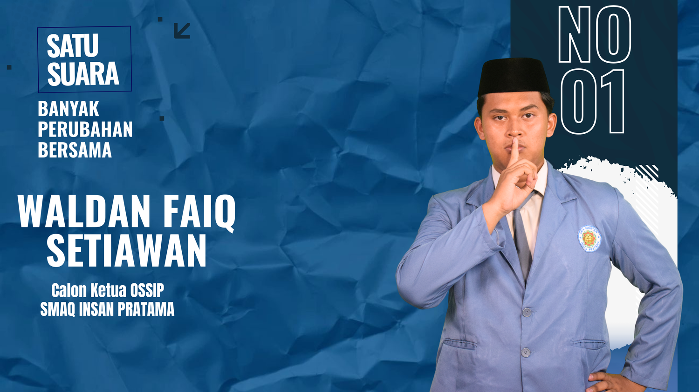
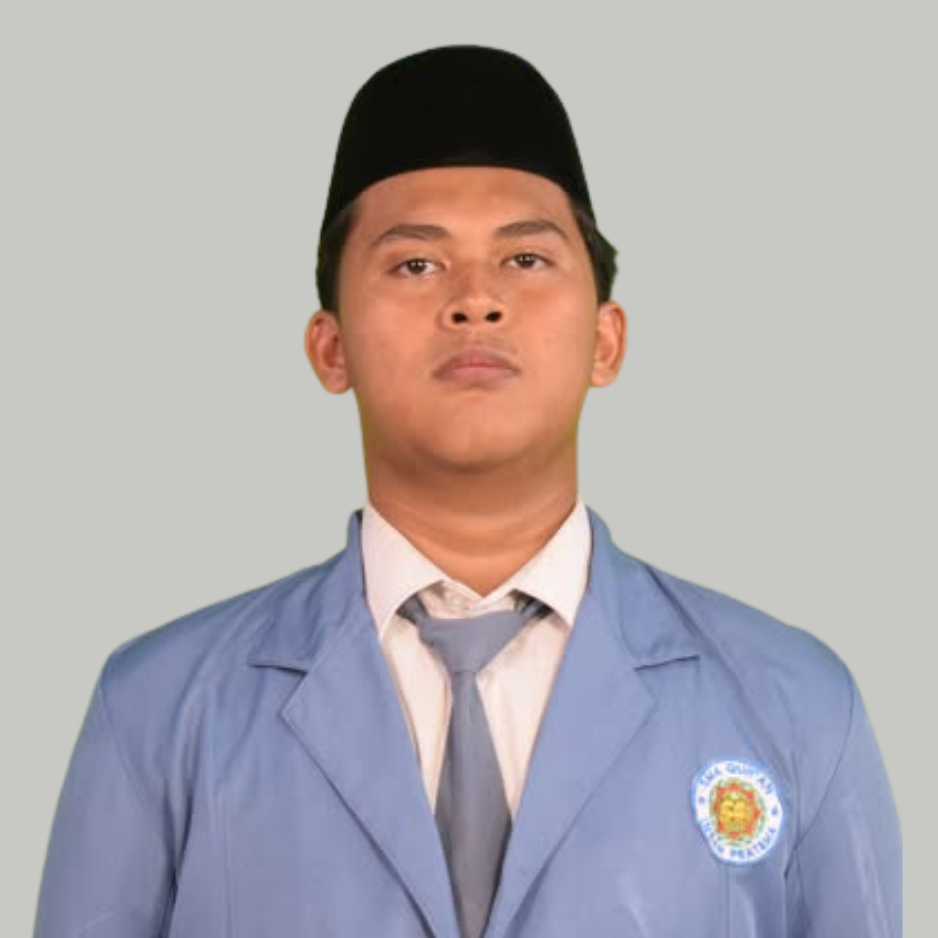
menjadikan OSSIP sebagai wadah untuk mewujudkan santri yang disiplin, berakhlak, bertanggung jawab, berprestasi, serta menjunjung tinggi nilai-nilai keislaman dalam kehidupan sehari-hari baik di pesantren maupun masyarakat.
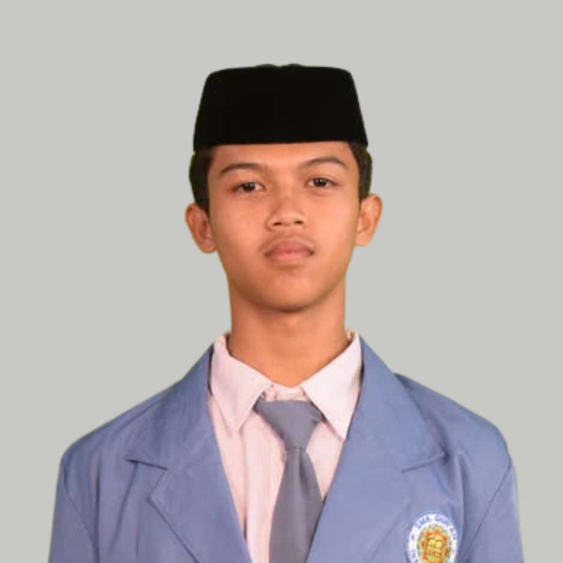
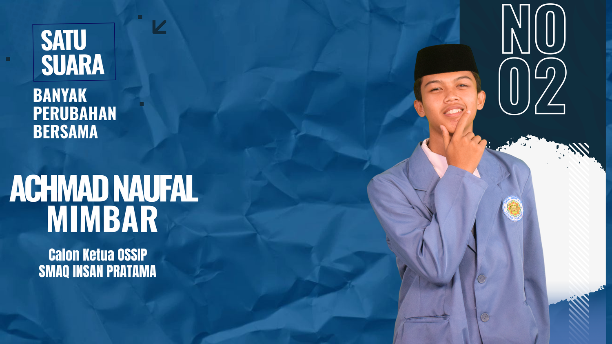
menjadikan OSSIP sebagai jalan untuk membentuk santri yang berakhlak mulia, disiplin, berprestasi, dan berkembang secara seimbang, baik di bidang akademik maupun non-akademik agar menjadi generasi yang bermanfaat dan membanggakan.
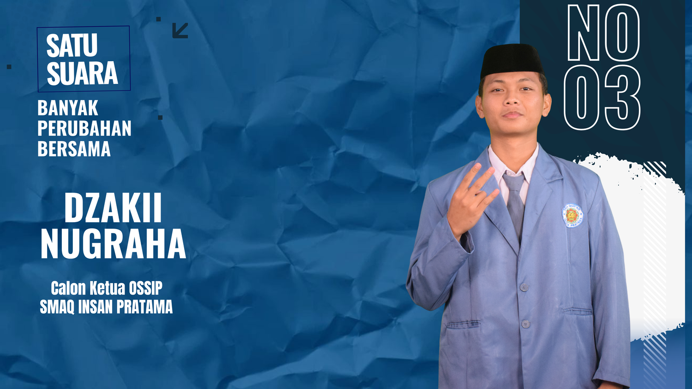
membangun generasi santri Insan Pratama yang mandiri, berakhlak mulia dan berprestasi melalui kepemimpinan yang merangkul keteladanan yang nyata, serta disiplin bersih berbasis kesadaran.
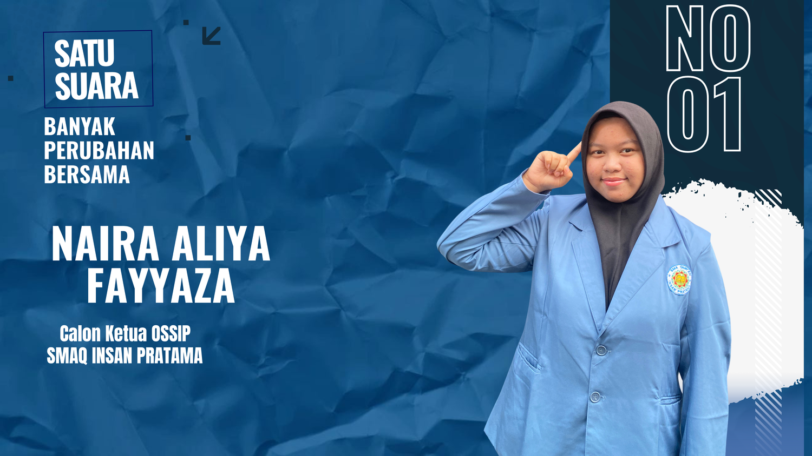
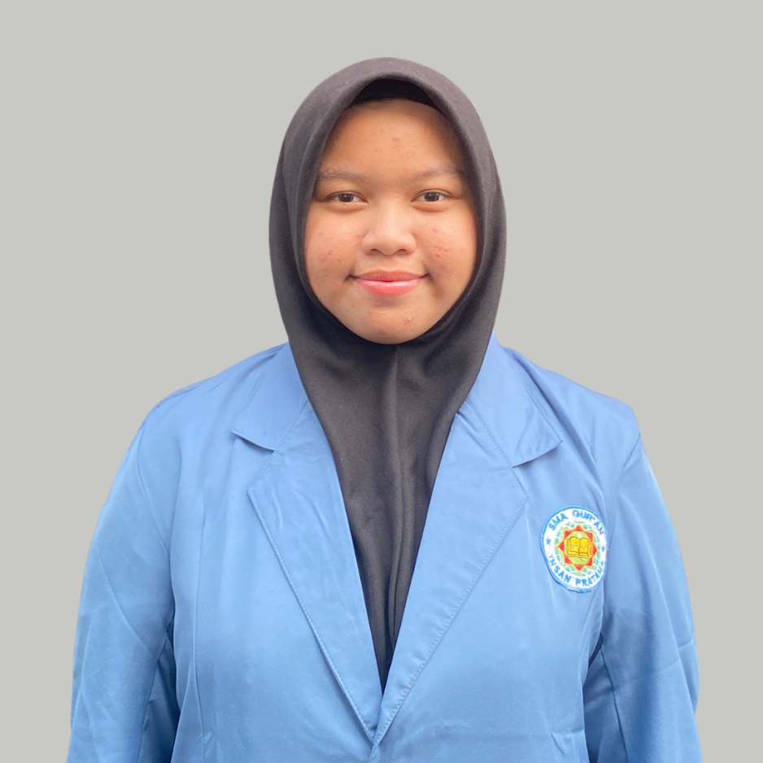
Menjadikan ossip sebagai wadah untuk membangun ekosistem organisasi santri yang berintegrasi menegakan disiplin berbasis kesadaran diri, visioner dalam berkreativitas dan aktif membangun bakat sebagai bekal pemimpin masa depan.
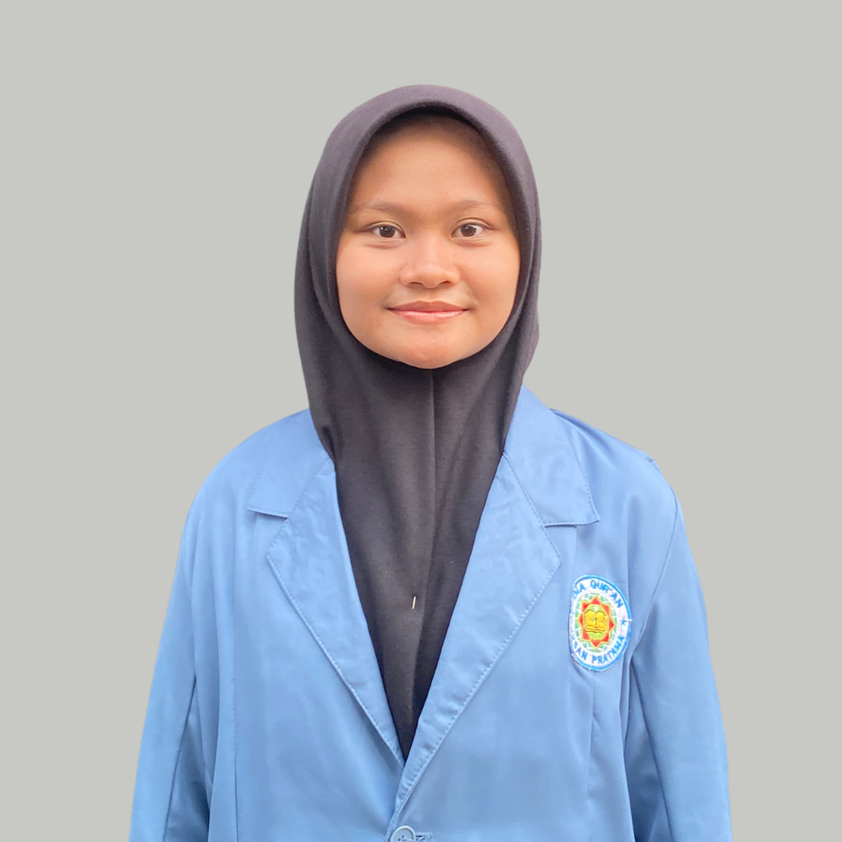
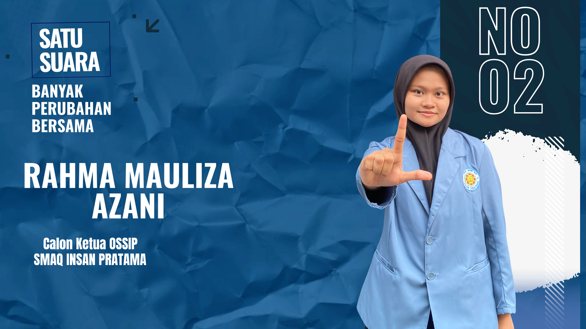
Mewujudkan organisasi kepemimpinan yang progresif & inklusif sebagai episentrun aspirasi, akselelator potensi bahasa, motor penggerak kepedulian sosial, guna membangun lingkungan pesantren yang disiplin dan unggul berlandaskan etika mengayomi, solidaritas, dan berdasarkan pada keimanan dan taqwa.
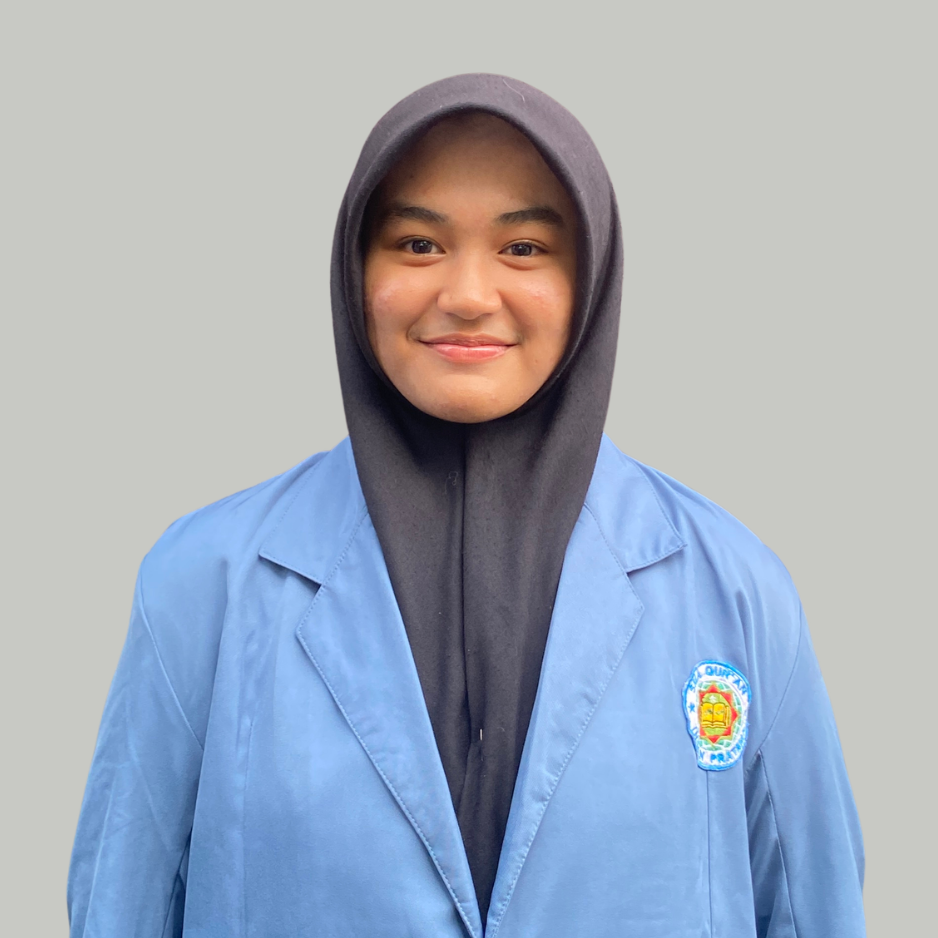
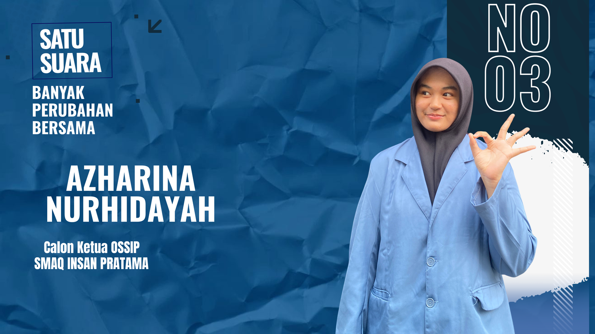
Mewujudkan lingkungan yang harmonis, disiplin, peduli sesama, dan berakhlak mulia melalui orgasisasi siswa yang solid serta aspiratif.
*Untuk memilih kandidat, silakan masuk ke halaman login siswa terlebih dahulu
Hari
Jam
Menit
Detik
Pemilihan dibuka: 14 November 2026 | Ditutup: 15 November 2026
Pemilu OSSIP merupakan wujud demokrasi di lingkungan sekolah, di mana setiap siswa berhak memilih pemimpinnya.
Setiap suara memiliki nilai yang sama dan sangat berarti dalam menentukan arah organisasi siswa sekolah.
Kandidat terpilih akan menjadi representasi siswa dalam menjembatani aspirasi kepada pihak sekolah.
Ikuti 4 tahap sederhana untuk memberikan suara Anda dalam pemilihan ketua OSSIP 2027-2028. Setiap tahap dihubungkan dengan garis untuk menunjukkan alur proses.
Login menggunakan username. Sistem akan memverifikasi status Anda sebagai siswa aktif yang berhak memilih.
Sistem memvalidasi identitas Anda dan memastikan belum melakukan voting sebelumnya. Data Anda dijaga kerahasiaannya.
Pilih kandidat ketua OSSIP sesuai pilihan hati. Voting bersifat rahasia dan tidak dapat dilacak ke pemilih.
Tahap terakhir dari semua proses yaitu, konfirmasi yang bertujuan untuk menunjukkan bahwa anda telah voting dengan cara cap jari